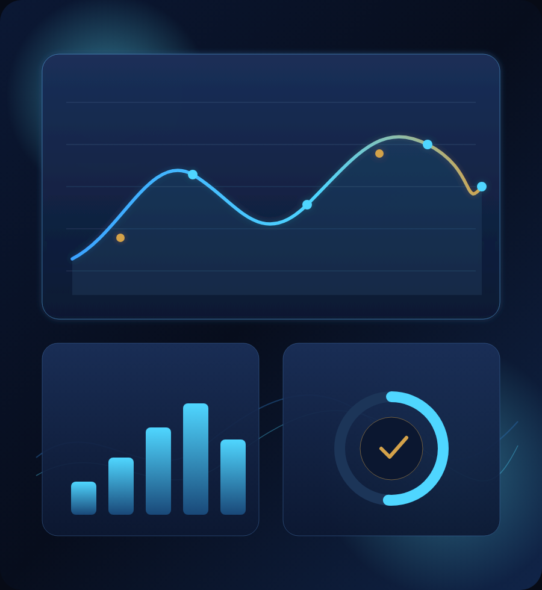

ملفات بياناتك
CSV أو Excel داخل المتصفح — حتى 40 ميجابايت — مع لوحة مؤشرات من أعمدة ملفك.
NAIOSH Intelligence
ذكاء يحوّل بياناتك إلى قرارات
اكتشف قوة بياناتك مع أدوات التحليل والتقارير والاستشارات الذكية في تجربة واحدة.

تصور فني — ليس لقطة من النظام فتح النظام الحينايوش لتحليل البيانات (NAIOSH Intelligence) تطبيق مستقل للتحليل والقرار المؤسسي. هذه الصفحة داخل نايوش هوب تعرّفك به وتربطك بالتسجيل والدخول — دون أن تجمع كلمات مرورك هنا.
CSV أو Excel داخل المتصفح — حتى 40 ميجابايت — مع لوحة مؤشرات من أعمدة ملفك.
أرسل طلبًا لفريق التحليل مع المرفقات والفيديو، واستلم تقريرًا موثّقًا.
ERP، موارد بشرية، مبيعات، مالية، سلامة، قانون، تدريب، وتعليم — بأسئلة واضحة.
إمكانيات ظاهرة في واجهة النظام الحي — بدون وعود غير موجودة.
سبعة أبعاد: الاكتمال، الدقة، الاتساق، الحداثة، التفرّد، الصلاحية، الموثوقية.
إن نقصت البيانات يسأل النظام ما يلزم فقط — سؤالًا واحدًا في كل مرة.
وصفي، تشخيصي، تنبؤي، استشرافي، جدوى، مخاطر، فرص، توجيهي، ومقارنة.
مسار من 13 مرحلة: من المشكلة والبيانات حتى القرار والتنفيذ وقياس الأثر.
النظام يقترح بدائل مع درجة ثقة؛ القرار ومبرره يبقى لصاحب الصلاحية، مع سجل تدقيق.
تقارير PDF/Excel عند السماح، برمز تحقق وعلامة مائية لحفظ الثقة.
مأخوذة من النظام الحي. اضغط اللقطة لفتح المسار المناسب.
ثلاث خطوات واضحة — التسجيل والدخول داخل النظام المستقل فقط.
التسجيل مجاني. الاستخدام يتم عبر نقاط — وتبدأ برصيد ترحيبي واضح.
التكاليف بالنقاط كما تظهر في كتالوج الخدمات داخل النظام. بعد نفاد الرصيد يمكنك شحن باقة اختيارية بالدينار الأردني (د.أ).
ارفع CSV/Excel واحصل على أنواع تحليل ولوحة مؤشرات.
نموذج كامل لفريق التحليل مع المرفقات ثم تقرير موثّق.
من المشكلة إلى القرار وقياس الأثر عبر 13 مرحلة.
التكاليف والعائد ونقطة التعادل والمخاطر.
PDF و Excel جاهز للعرض على الإدارة عند السماح.
نقاط القوة والقيم والمسار المهني للأفراد.
الأسعار والحدود من النظام الحي وقت المراجعة. الشحن يتم داخل النظام نفسه — هذه الصفحة لا تجمع مدفوعات ولا كلمات مرور.
إجابات مختصرة من سياسة وواجهة النظام.
اضغط «ابدأ مجانًا»، ثم «إنشاء حساب» من الشريط العلوي للنظام، وأكمل التحقق من البريد والجوال.
نعم. إنشاء الحساب مجاني وتحصل على 300 نقطة ترحيب بعد التحقق. بعد نفاد الرصيد تشحن باقة بالدينار إن رغبت.
لا. النظام مستقل. صفحة هوب هذه تعرضه وتربطك به فقط.
لا. النظام يحلّل ويقترح؛ القرار ومبرره يبقى لك.
CSV أو Excel بعناوين أعمدة واضحة، وحتى 40 ميجابايت لتحليل الملف داخل المتصفح.
من هذه الصفحة استخدم «العودة لنايوش هوب». حسابك في هوب يبقى كما هو.
سجّل حسابك، استلم 300 نقطة ترحيبية، وجرّب تحليل ملفك أو اطلب استشارة. إن كان لديك حساب فادخل مباشرة.